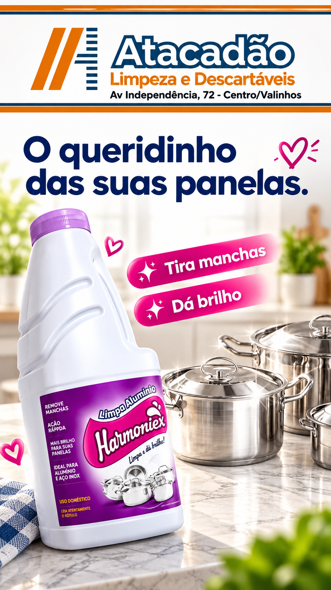
Atacadão Valinhos
Tudo para sua casa.
Tudo para sua casa.
Tudo para o seu negócio.
Uma presença local forte, agora organizada no digital: limpeza, descartáveis, embalagens, festas, food service, utilidades e muito mais.
2unidades em Valinhos
Milharesde itens e soluções
B2B + B2Ccasa e empresas
role para descobrir ↓
Busca rápida
O que você precisa hoje?
Compre pela necessidade
Um Atacadão. Várias rotinas resolvidas.
O novo posicionamento digital organiza a variedade pelo que o cliente quer resolver — rápido, intuitivo e com cara de marca regional forte.
01
Casa & rotina
Limpeza, organização, panos, baldes e utilidades.
Explorar → 02Empresas
Reposição, limpeza profissional, papel e itens operacionais.
Atendimento B2B → 03Food Service
Soluções para restaurantes, lanchonetes e delivery.
Explorar → 04Festas
Descartáveis, confeitaria e itens para eventos.
Explorar → 05Limpeza
Da rotina doméstica ao uso profissional.
Explorar → 06Embalagens
Sacos, potes, descartáveis e soluções de acondicionamento.
Explorar →
Destaques do mix
Produtos que mostram o tamanho da variedade.
Esta V1 usa material visual tratado para construir percepção de catálogo, variedade e organização — sem transformar o site num marketplace pesado.
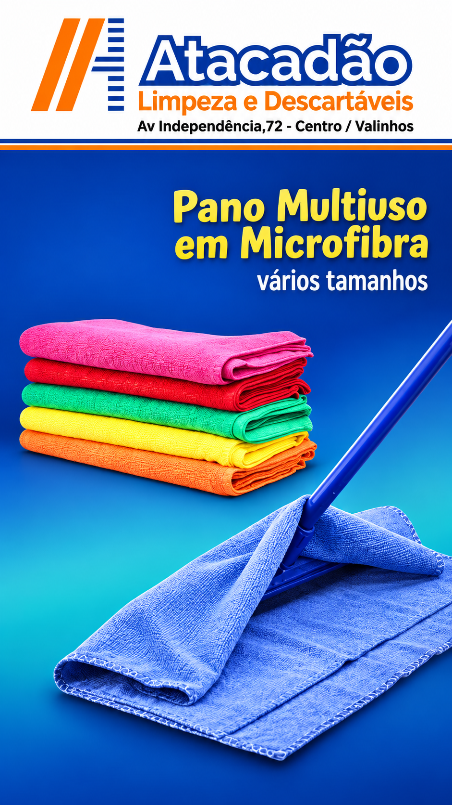
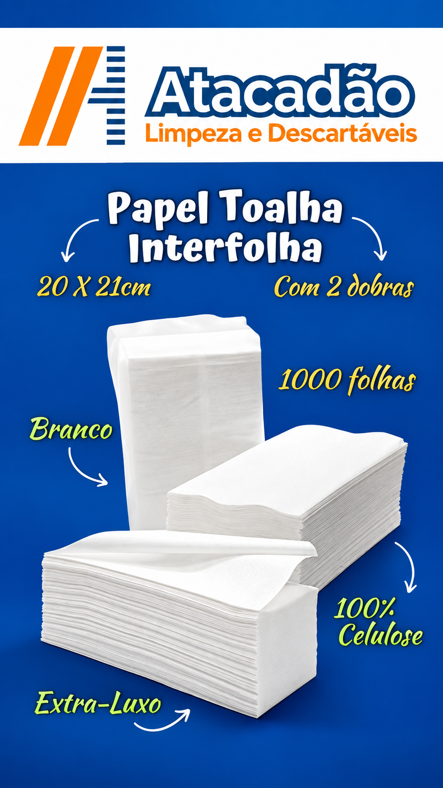
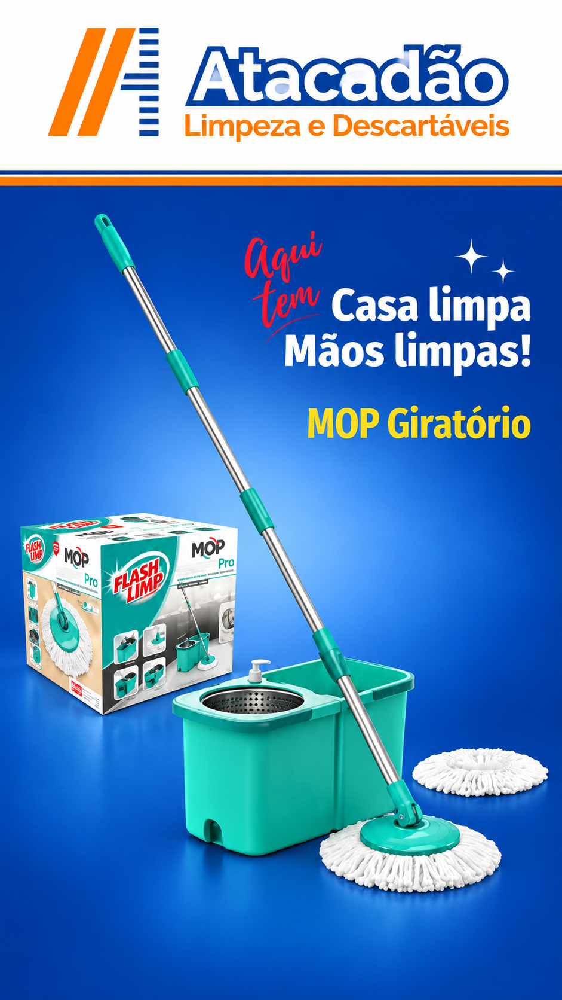
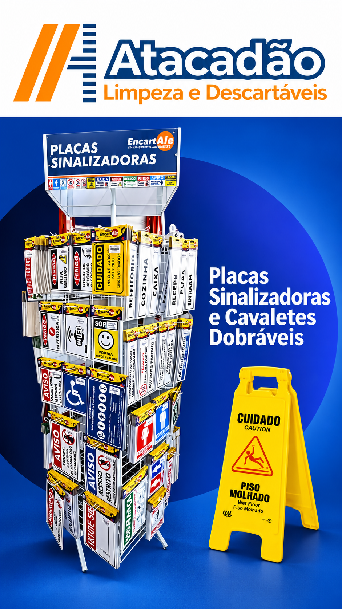
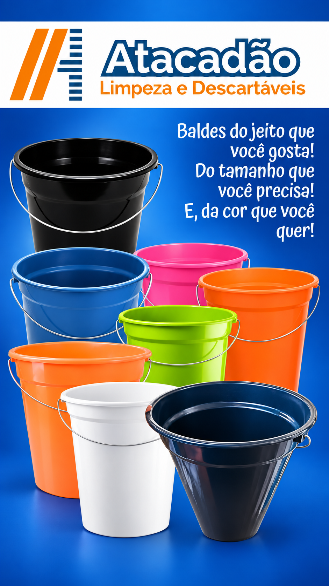
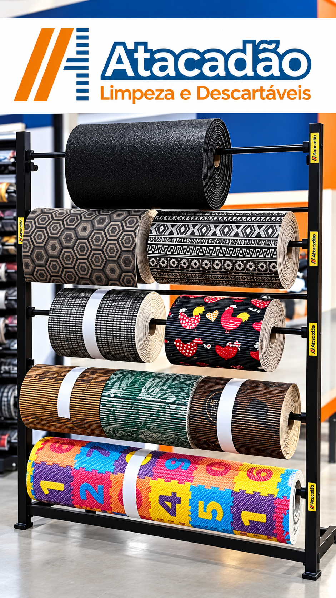
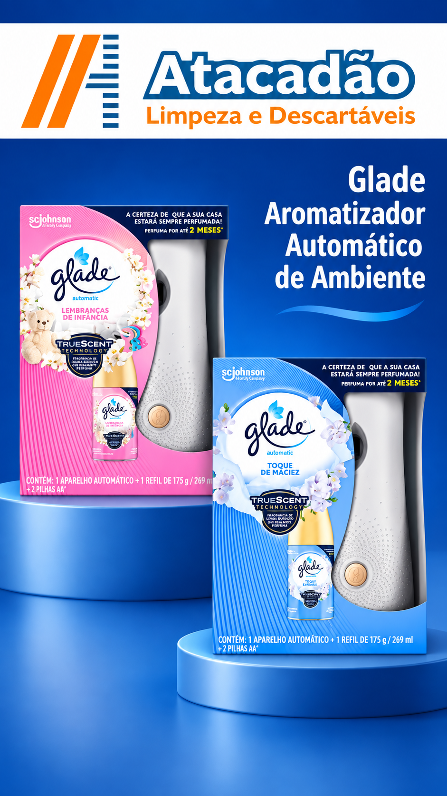
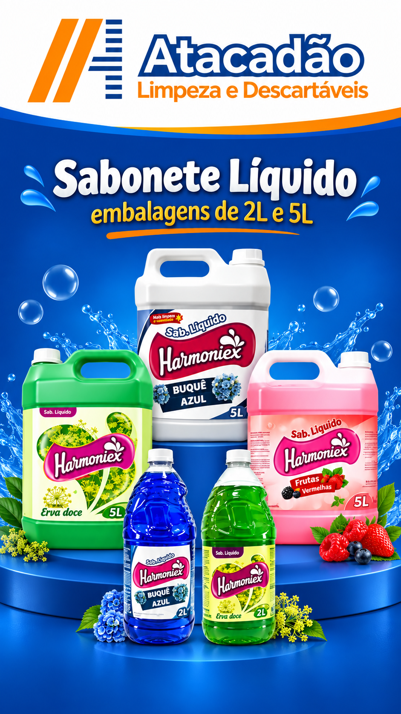
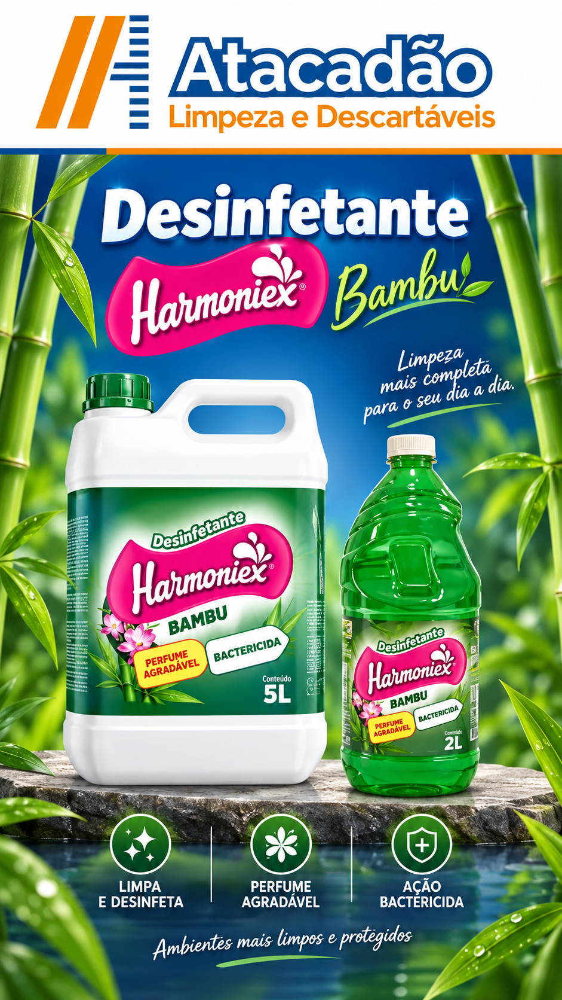
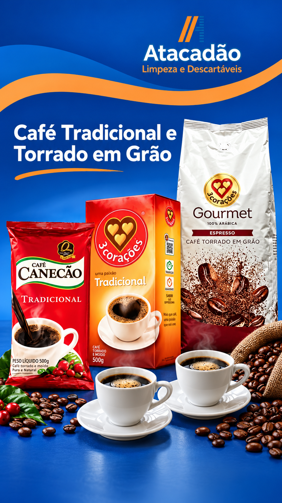
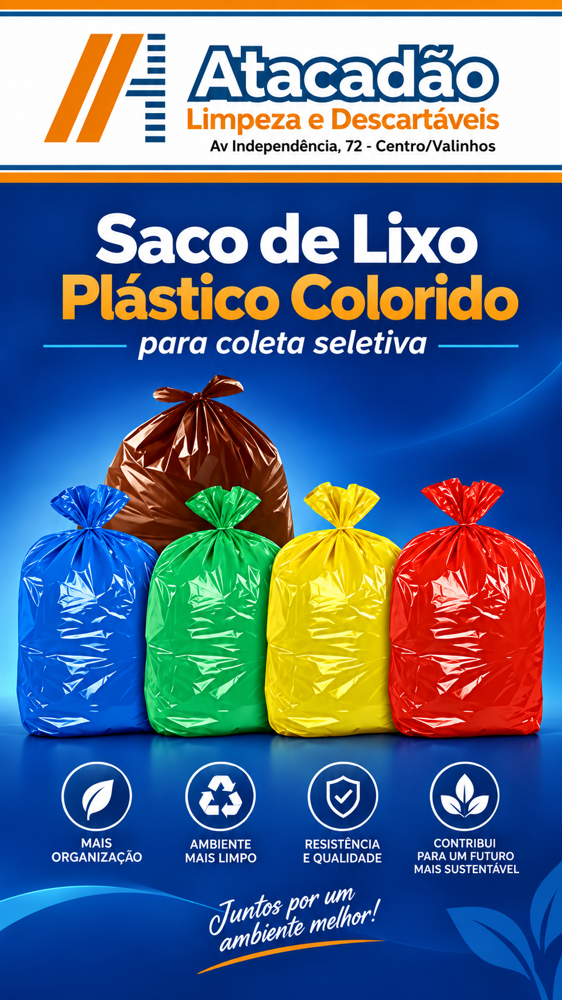
Não achou o que procura?O mix é muito maior do que esta seleção da V1.
Consultar pelo WhatsApp
Atendimento empresarial
Seu negócio não pode parar por falta de material.
Restaurantes, lanchonetes, condomínios, escritórios, buffets, comércios e operações locais podem concentrar compras recorrentes em um só parceiro.
Quero atendimento para minha empresaAtacadão em movimento
Uma empresa viva precisa aparecer viva.
Os vídeos saem do Instagram e passam a trabalhar também como prova de operação, presença local e variedade.
Apresentação
Conheça o Atacadão
Unidade Centro
Presença no coração de Valinhos
Por dentro
Variedade que o cliente enxerga
2 unidades em Valinhos
Escolha a loja mais conveniente.
Endereço, telefone e rota organizados em um único lugar — sem o cliente precisar caçar informação em posts antigos.
Centro
Av. Independência, 72Centro • Valinhos/SP
Seg–Sex 8h–18h • Sáb 8h–15h • Dom 8h–13h
Av. dos Esportes
Av. dos Esportes, 1209Jd. Planalto • Valinhos/SP
Seg–Sex 8h–18h • Sáb 8h–13h
Marca local. Presença digital.
Valinhos já conhece o Atacadão. Agora o digital também vai conhecer.
O projeto transforma a força que já existe na loja e no Instagram em uma experiência própria: fácil de encontrar, fácil de entender e pronta para converter em visita, rota, ligação ou WhatsApp.
Atendimento rápido
Chamar no WhatsApp
Procura algo específico?
Fale com o Atacadão e encontre o produto certo para sua casa ou empresa.